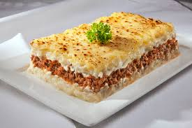

Escondidinho
Um clássico da culinária brasileira, com a cremosidade do purê de mandioca e o sabor marcante da carne seca refogada. Perfeito para o almoço ou jantar!
Detalhes
- Preparo: 60 minutos
- Cozimento: 25-30 minutos (Forno)
- Rendimento: 6 porções
- Nível: Médio
Ingredientes
Para a Carne Seca:
- 500g de carne seca (dessalgada e desfiada)
- 1 cebola grande picada
- 3 dentes de alho picados
- 2 colheres de sopa de azeite
- 1/2 pimentão verde picado (opcional)
- 1/2 xícara de molho de tomate
- Salsinha e cebolinha picadas a gosto
- Pimenta do reino a gosto (o sal deve ser ajustado, pois a carne seca já é salgada)
Para o Purê de Mandioca (Aipim/Macaxeira):
- 1 kg de mandioca (aipim) cozida
- 1/2 xícara de leite de coco
- 1/2 xícara de leite integral
- 1 colher de sopa de manteiga
- Sal a gosto (cuidado, a carne já é salgada)
- Parmesão ralado (para gratinar)
Modo de Preparo
Carne Seca (Recheio):
- **Dessalgue a Carne:** Corte a carne seca em cubos e cozinhe na pressão trocando a água 2-3 vezes para remover o excesso de sal. Cozinhe até ficar macia. Desfie e reserve.
- Em uma panela, aqueça o azeite e refogue a cebola e o alho até dourarem. Adicione o pimentão (se usar).
- Junte a carne seca desfiada e frite levemente. Acrescente o molho de tomate, pimenta do reino e cozinhe por 5 minutos para apurar o sabor.
- Finalize com salsinha e cebolinha. Reserve.
Purê de Mandioca:
- Amasse a mandioca cozida ainda quente (pode ser com um garfo ou espremedor).
- Em uma panela, derreta a manteiga. Adicione a mandioca amassada, o leite de coco e o leite integral.
- Misture bem em fogo baixo, batendo com uma colher de pau, até obter um purê liso e cremoso. Ajuste o sal se necessário.
Montagem:
- Em um refratário, espalhe metade do purê de mandioca no fundo.
- Cubra o purê com todo o recheio de carne seca.
- Cubra o recheio com a outra metade do purê, espalhando uniformemente.
- Polvilhe queijo parmesão ralado por cima.
- Leve ao forno pré-aquecido a 180°C por cerca de 25-30 minutos, ou até que esteja borbulhante e o queijo esteja gratinado e dourado. Sirva quente.
Dicas do Chef
— O purê pode ser enriquecido com 1 colher de sopa de requeijão ou cream cheese para uma cremosidade extra.
— Se preferir o purê com mais sabor, adicione um pouco de alho e cebola fritos na manteiga antes de adicionar a mandioca.
— Para um toque regional, substitua o parmesão por queijo coalho ralado na hora de gratinar.